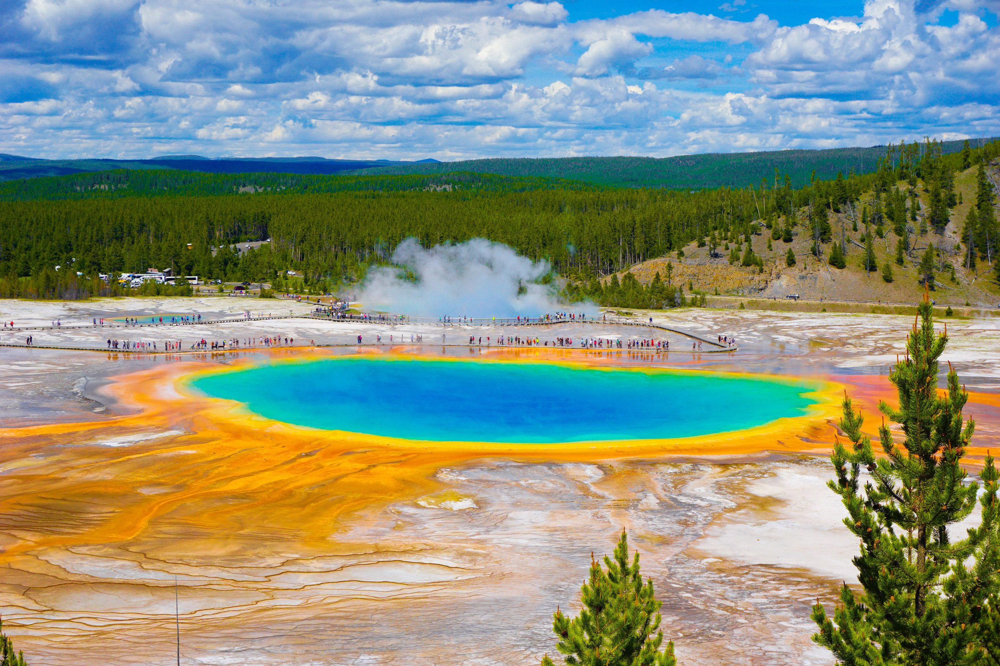

1. Great Wall of China (China)

The Great Wall of China was first built around 7th century BC during Qin Dynasty, with most of the existing wall constructed during the Ming Dynasty (1368-1644).
This incredible ancient structure stretches over 13,000 miles and is a symbol of China's rich history and architectural brilliance.
Every year, more than 10 million people flock to China to visit the great wall of China
2. Grand Prismatic Spring (Wyoming, USA)
Located in Yellowstone National Park, this colorful hot spring is the largest in the United States and a stunning natural wonder.
3. Waitomo Glowworm Caves (New Zealand)

These magical caves are illuminated by thousands of glowworms, creating a starry night effect underground.
4. Sea of Stars (Vaadhoo Island, Maldives)

Bioluminescent plankton light up the shores at night, giving the sea a glowing, star-like appearance.
5. Lake Hillier (Australia)

This bright pink lake on Middle Island is a natural wonder and a mystery due to its unusual color.
6. Iguazu Falls (Argentina and Brazil)

One of the largest and most powerful waterfall systems in the world, Iguazu Falls is a breathtaking sight surrounded by lush rainforest.
7. Machu Picchu (Peru)

This ancient Incan city in the Andes Mountains is one of the world's most amazing archaeological wonders.
8. Bora Bora (French Polynesia)

major international tourist destination
famous for its seaside (and even offshore) luxury resorts.
9. Northern Lights (Iceland)

Best countries to visit Nortern lights are Iceland, Norway, Greenland, Alaska,Canada, and etc.
a unique window into our sun's activity, space weather and Earth's magnetic field
The best time to see the northern lights in Alaska is from late August to mid-April, when the nights are long and dark. (You won't see them during the summer months because of Alaska's midnight sun.)
10. Stonehenge (England)
one of the wonders of the world and the best-known prehistoric monument in Europe.
the most architecturally sophisticated and only surviving lintelled stone circle in the world.